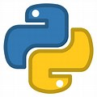

<!DOCTYPE jarvis>
 <lang="en">
<head>
    <meta charset="UTF-8">
    <title>My Resume</title>
</head>
<body>
    <h1>Vaibhav Anand</h1>
    
    <hr />
    <h2>Summary</h2>
    <p>I am a third-year computer science student with a strong foundation in programming languages and cyber security. I am proficient in HTML, C, C++, and Java, and I have a basic understanding of cyber security concepts. I am eager to gain experience in the field and contribute to a team.</p>
    <h2>Objective</h2>
    <p?>To secure an entry-level position in software development or cyber security, where I can use my skills and knowledge to make a positive impact.</p>
    <hr />
    <h2>Education</h2>
    <ul>
        <li>Schooling: PCM+CS; Metropolitan School, Gorakhpur(2007-2021)</li>
        <li>College: B.Tech(CSE); JAYPEE UNIVERSITY OF ENGINEERING AND TECHNOLOGY, GUNA(2022-2026)</li>
    </ul>
    <hr />
    <h2>Work Experience</h2>
    <ul>
        <li>
            <h3>Chegg Expert</h3>
            <ul>
                <li>Currently working as Chegg Computer Science Subject Expert</li>
                <li>From: October,2022</li>
                <li>Solving 15Q/month (average)</li>
            </ul>
        </li>
        <li>
            <h3>Content Provider</h3>
            <ul>
                <li>Worked with famous youtube channel named TECHWISER</li>
                <li>Provided Content to the Youtube Channel</li>
                <li>Worked for 2 months (2021)</li>
            </ul>
        </li>
    </ul>
    <hr />
    <h2>Skills</h2>
    <ul>
        <li>Languages
            <ol>
                <li>JAVA </li>
                <li>C </li>
                <li>C++ </li>
                <li>HTML </li>
                <li>PYTHON </li>
            </ol>
        </li>
        <li>Presentation Skill</li>
        <li>Team Leader/Player</li>
        <li>Audio/Video Editing</li>
        <li>Beat Producer/Beatboxer</li>
        <li>Rapper</li>
    </ul>
    <hr />
    <h2>Awards and Certification</h2>
    <ul>
        <li>Captain of School Football Team</li>
        <li>Hackerrank Certification in C and JAVA</li>
        <li>Expert certification by CHEGG</li>
    </ul>
    <hr />
    <h2>Others</h2>
    <ul>
        <li><a href="public/hobbies.html">Hobbies</a></li>
        <li><a href="public/my contacts.html">Contact Me</a></li>
    </ul>
    <hr />
    <footer>
        <p>© JARVIS</p>
    </footer>
</body>
</jarvis>
